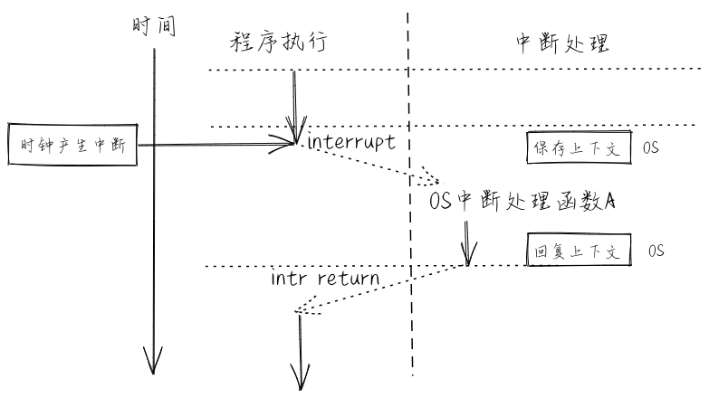
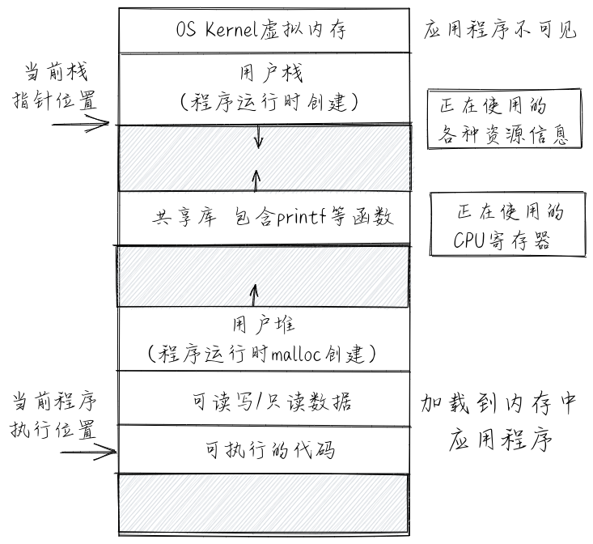
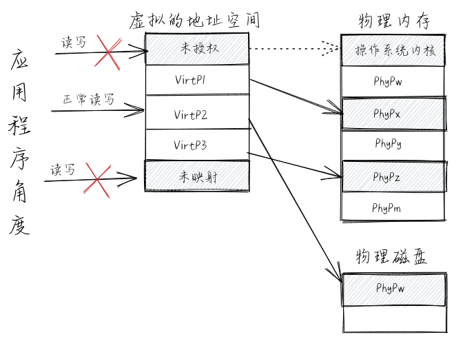
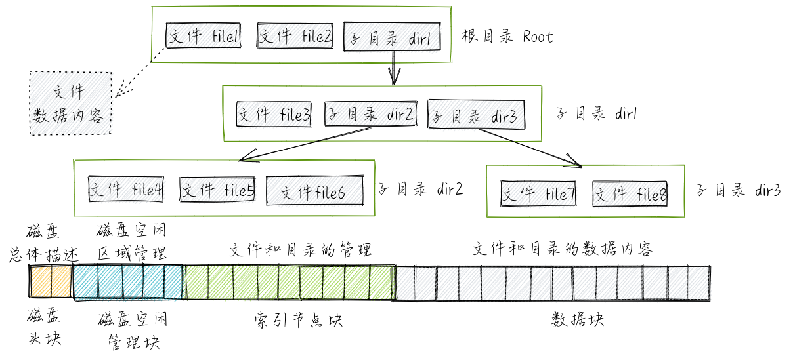

操作系统抽象¶
接下来读者可站在操作系统实现的角度来看操作系统。操作系统为了能够更好地管理计算机系统并对应用程序提供便捷的服务，在计算机和操作系统的技术研究和发展的过程中，形成了一系列的核心概念，奠定了操作系统内核设计与实现的基础。
注解
在本书中，下面的抽象表示将以有形的数据结构和实际的执行行在后续各章实现的操作系统内核中进行展示。
执行环境（Execution Environment）¶
执行环境是一个内涵很丰富且有一定变化的一个术语，它主要负责给在其上执行的软件提供相应的功能与资源，并可在计算机系统中形成多层次的执行环境。对于现在直接运行在裸机硬件（baremetal）上的操作系统，其执行环境也是 计算机的硬件 。 在寒武纪时期的计算机系统中，还没有操作系统，所以对于直接运行在裸机硬件（baremetal）上的应用程序而言，其执行环境就是 计算机的硬件 。 随着计算机技术的发展，应用程序下面形成了一层比较通用的函数库，这使得 应用程序不需要直接访问硬件了，它所需要的功能（比如显示字符串）和资源（比如一块内存）都可以通过函数库的函数来帮助完成。在第二个阶段，应用程序的执行环境就变成了 计算机硬件+函数库 ，而这时 函数库 的执行环境就是 计算机的硬件 。

再进一步，操作系统取代了函数库来访问硬件，函数库通过访问操作系统的系统服务来进一步给应用程序 提供丰富的功能和资源。在第三个阶段，应用程序的执行环境就变成了 函数库+操作系统+计算机硬件 。 在后面又出现了基于java语言的应用程序，在函数库和操作系统之间，多了一层 java虚拟机 ，此时java应用 程序的执行环境就变成了 函数库+java虚拟机+操作系统+计算机硬件 。在云计算时代，在传统操作系统与 计算机硬件之间多了一层Hypervisor/VMM，此时应用程序的执行环境变成了 函数库+java虚拟机+操作系统+Hypervisor/VMM+计算机硬件 。另外，执行环境的不同层次通过 Program Interface 或 Binary Interface 进行交互，而且彼此之间也有一定的交集，并不一定具有严格区分的界面。

对于应用程序的执行环境而言，其具体的内容是多变的，但应用程序只能看到执行环境提供给它的直接的接口（API or ABI），这使得应用程序所能得到的直接服务取决于执行环境提供给它的直接接口。当然执行环境 中的内在功能（如对于应用程序的资源调度与管理等）也会对应用程序的执行效率，可靠性等提供间接的支持。所以，操作系统是属于或等于应用程序执行环境的软件部分，其形态可以是一个库，也可以是一个虚拟机等，或者它们的某种组合形式。
基于上面的介绍，我们可以给应用程序的执行环境一个基本的定义：执行环境是一个概念，一种机制，用来完成应用程序在运行时的数据与资源管理、应用程序的生存期等方面的处理，它定义了应用程序有权访问的其他数据或资源，并决定了应用程序的行为限制范围。
异常控制流（exceptional control flow）¶
首先，处理器的控制流（flow of control 或 control flow）是指处理器中程序计数器的控制转移序列。最简单的一种控制流是一个“平滑的”序列，其中每个要执行的指令地址在内存中都是相邻的。如果前一条指令和后一条指令位于两个完全不同的位置，即不同的 执行环境，比如，前一条指令还在应用程序的代码段中，后一条指令就跑到操作系统的代码段中去了，这就是一种控制流的“突变”，即控制流脱离了其所在的 执行环境 。
简单地说，异常控制流是处理器在执行过程中的突变，即通过硬件和操作系统的协同工作来响应处理器状态中的特殊变化。比如当应用程序正在执行时，产生了时钟外设中断，导致操作系统打断当前应用程序的执行，转而进入 操作系统 所在的执行环境去处理时钟外设中断。处理完毕后，再回到应用程序的 执行环境 中被打断的地方继续执行。在操作系统中，需要处理三类异常控制流：外设中断（Device Interrupt）、陷入（Trap）和异常（Exception，也称Fault Interrupt）。外设中断由外部设备引起的外部I/O事件如时钟中断、控制台中断等。外设中断是异步产生的，与处理器的执行无关。
异常是在处理器执行指令期间检测到不正常的或非法的内部事件（如除零错、地址访问越界）。

陷入是在程序中使用请求操作系统服务的系统调用而引发的有意事件。

在后面的叙述中，如果没有特别指出，我们将用简称中断、陷入、异常来区分这三种异常控制流。
进程（Process）¶
进程的一个经典定义是一个正在运行的程序的实例。在计算机系统中，我们可以“同时”运行多个程序，这个“同时”，其实是操作系统给用户造成的一个“幻觉”。在操作系统上运行一个程序时，我们会得到一个“幻觉”，就好像我们执行的一个程序是整个计算机系统中当前运行的唯一的程序，且像独占地使用处理器、内存和外设。而且程序中的代码和数据好像是系统内存中唯一的对象。这些假象都是通过进程的概念提供给我们的。

计算机系统中运行的每个程序都是运行在某个进程的上下文（context）中。这里的上下文是指程序在运行中的状态。运行的状态包括：内存中的代码和数据，栈、堆、当前执行的指令位置（程序计数器的内容）、 当前执行时刻的各个通用寄存器中的值，各种正在访问的资源描的集合。进程上下文如下图所示：
大家知道，处理器是计算机系统中的硬件资源。为了提高处理器的利用率，操作系统需要让处理器足够忙，即让不同的程序轮流占用处理器来运行。如果一个程序因某个事件而不能运行下去时，就通过进程上下文切换把处理器占用权转交给另一个可运行程序。进程上下文切换如下图所示：

基于上面的介绍，我们可以给进程一个更加准确的定义：一个进程是一个具有一定独立功能的程序在一个数据集合上的一次动态执行过程。操作系统中的进程管理需要协调多道程序之间的关系，解决对处理器分配调度策略、分配实施和回收等问题，从而使得处理器资源得到最充分的利用。
地址空间（Address Space）¶
地址空间是对物理内存的虚拟化和抽象，也称虚存（Virtual Memory）。它就是操作系统通过处理器中的MMU硬件的支持而给应用程序和用户提供一个大的（超过计算机中的内存条容量）、一致的（连续的地址空间）、私有的（其他应用程序无法破坏）的存储空间。这需要操作系统将内存和硬盘结合起来管理，为用户提供一个容量比实际内存大得多的虚拟存储器，并且需要操作系统为应用程序分配内存空间，使用户存放在内存中的程序和数据彼此隔离、互不侵扰。操作系统中的虚存管理与处理器的MMU密切相关,在启动虚存机制后，软件通过CPU访问的每个虚拟地址都需要通过CPU中的MMU转换为一个物理地址来进行访问。下面是虚拟的地址空间与物理内存和物理磁盘映射的图示：
文件（File）¶
文件主要用于对持久存储的抽象，并进一步扩展到为外设的抽象。具体而言，文件可理解为存放在持久存储介 质（比如硬盘、光盘、U盘等）上，方便应用程序和用户读写的数据。以磁盘为代表的持久存储介质的数据访问单位是一个扇区或一个块，而在内存中的数据访问单位是一个字节或一个字。这就需要操作系统通过 文件 来屏蔽磁盘与内存差异，尽量以内存的读写方式来处理持久存储的数据。当处理器需要访问文件中的数据时，可通过操作系统把它们装入内存。文件管理的任务是有效地支持文件的存储、 检索和修改等操作。
下面是文件对磁盘的抽象映射图示：
从一个更高和更广泛的层次上看，各种外设虽然差异很大，但也有基本的读写操作，可以通过文件来进行统一的抽象，并在操作系统内部实现中来隐藏对外设的具体访问过程，从而让用户可以以统一的文件操作来访问各种外设。这样就可以把文件看出是对外设的一种统一抽象，应用程序通过基本的读写操作来完成对外设的访问。